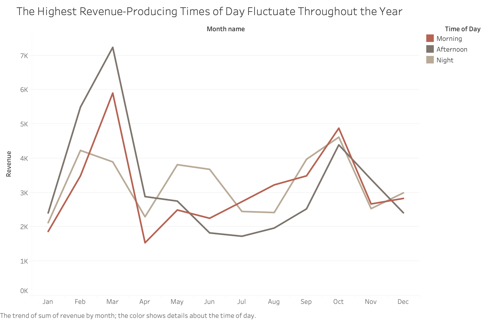
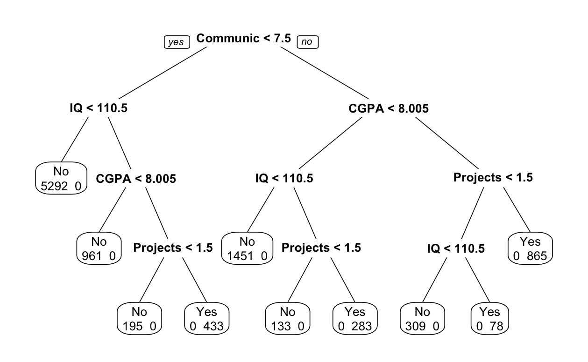

Skills
- R
- Python (pandas, NumPy, scikit-learn)
- SQL
- PySpark
- Tableau
- Statistical methods: Linear/logistic regression, GLM, decision trees, SEM, clustering (K-means), PCA, GIS analysis, and more
Data Projects

Coffee Sales
Applied multiple linear regression to identify key predictors of coffee sales revenue.
View Project →

Classification Trees
Developed decision tree models to predict student college placement outcomes.
View Project →About Me
I am a PhD candidate in Psychology and completing my Master's in Data Analysis and Applied Statistics at Virginia Tech. I'll be graduating in May 2026 and am seeking opportunities in research or data science.
My Resume